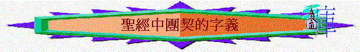

Greek Word
詞典
- Strong Number 2842
﹝希臘文詞彙﹞
2842 koinonia {koy-nohn-ee'-ah}
源於 2844; TDNT - 3:797,447; 陰性名詞
AV - fellowship 12, communion 4, communication 1, distribution 1,
contribution 1, to communicate 1; 20
1) 團契, 交流, 親密關係, 交往
2) 同袍情誼, 寬宏大量,
3) 團契的記號, 兄弟情誼的證據, 禮物, 貢獻
4) 參與, 分享
Strong Number 2842
﹝總共出現次數：20﹞
都恆心遵守使徒的教訓，彼此交接，擘餅，祈禱。
因為馬其頓和亞該亞人樂意湊出捐項給耶路撒冷聖恕云瑤a人。
神是信實的，你們原是被他所召，好與他兒子─我們的主耶穌基督一同得分。
我們所祝福的杯，豈不是同領基督的血嗎？我們所擘開的餅，豈不是同領基督的身體嗎？
我們所祝福的杯，豈不是同領基督的血嗎？我們所擘開的餅，豈不是同領基督的身體嗎？
你們和不信的原不相配，不要同負一軛。義和不義有甚麼相交呢？光明和黑暗有甚麼相通呢？
再三的求我們，准他們在這供給聖徒的恩情上有分；
他們從這供給的事上得了憑據，知道你們承認基督順服他的福音，多多的捐錢給他們和眾人，便將榮耀歸與神。
願主耶穌基督的恩惠、神的慈愛、聖靈的感動，常與你們眾人同在！
又知道所賜給我的恩典，那稱為教會柱石的雅各、磯法、約翰，就向我和巴拿巴用右手行相交之禮，叫我們往外邦人那�堨h，他們往受割禮的人那�堨h。
又使眾人都明白，這歷代以來隱藏在創造萬物之神�堛熄灝收O如何安排的，
因為從頭一天直到如今，你們是同心合意的興旺福音。
所以，在基督�堶Y有甚麼勸勉，愛心有甚麼安慰，聖靈有甚麼交通，心中有甚麼慈悲憐憫，
使我認識基督，曉得他復活的大能，並且曉得和他一同受苦，效法他的死，
願你與人所同有的信心顯出功效，使人知道你們各樣善事都是為基督做的。
只是不可忘記行善和捐輸的事；因為這樣的祭，是神所喜悅的。
我們將所看見、所聽見的傳給你們，使你們與我們相交。我們乃是與父並他兒子耶穌基督相交的。
我們將所看見、所聽見的傳給你們，使你們與我們相交。我們乃是與父並他兒子耶穌基督相交的。
我們若說是與神相交＃，卻仍在黑暗�埵獢A就是說謊話，不行真理了。
我們若在光明中行，如同神在光明中，就彼此相交＃，他兒子耶穌的血也洗淨我們一切的罪。
一.共有(徒2:44,林前10:16,門1:6)communion
~和合本團契的譯法:同領,與人所同有的
~我們今天有共同的信仰,同有的救恩之人聚在一起就是團契
~同世人不同,世人即或彼此多熟,但沒有共同的救恩
~不要期望要有同一性格,同一風格,同一理念的人走在一起才是團契,即或我們有很多不同的地方,但我們有共同的信仰,共同的主已足夠了!
二.相交(徒2:42,約壹1:3,腓2:1-2)
communication
~和合本團契的譯法:彼此交接,相交,交通
~團契生活是有彼此交通的
~不是單個人追求,不是不與人聯繫的
~相交內容:腓2:1-2
1.勸勉----在基督��
A.我是誰？又不是導師，怎可勸勉團友----代表基督就可以了！
B.我懼怕勸勉人，我已與他太熟了----在主就應用愛心說誠實話
C.不知怎勸勉----以基督的心為心，用主的說話及感動勸勉
D.不是用血氣，用自己個人領受勸勉別人，是以主的溫柔及滿有真理的心勸導
2.安慰----用愛心
A.安慰不是單是一份職責、工作、而是出於愛心，是不虛假的
B.安慰別人的動機不是滿足揭人私隱，滿足個人輔導的成就，而動機是出於真誠的愛
C.愛是顧及對方感受，愛是有恩慈，憐憫的，用主的愛安慰別人
3.交通----在靈��
〜交通的意思是〝fellowship〞〝communciation〞
A.要聆聽
B.願分享
C.是互動
a.不是單發表個人意見，而是有互相討論，回應空間
b.不是突然加插話題，而是透過自然分享，彼此回應，引入相關分享內容
c.多邀請其他人分享及作出回應
D.同感心----與喜樂的人同樂，與哀哭的人同哭
E.在靈��
a.彼此自然地分享屬靈的事(例如聽道感受、感恩、代求的事情)
b.但不要太極端化----將屬靈與屬世分得太清，例如討論照顧嬰兒的事就不屬靈(其實小朋友也是神賜的)，單是靈修分享才屬靈……..
c.先知的靈是順服先知，細心聆聽別人的感動，不要爭誰先分享
三.貢獻(羅15:26,徒2:44-45)contribution
~和合本團契的譯法:捐項、捐輸的事、捐錢
~有將你有的,
貢獻出來,與人共享的意思,像初期教會---凡物公用
~回到團契,不是單要求導師、團友給我什麼,自己也要付出,將自己的時間,金錢,精神[攞出來]
~要為團友付出,不要作旁觀者
四.同心(腓1:5,徒2:47)
Fellowship
~和合本團契的譯法:同心合意
~初期教會的信徒走在一起,是有共同的使命
~也是主的心意,要得救的人增多
~團契若有使命,就有因完成主使命而得主同在的應許
~今日我們有否忘記主的托負!